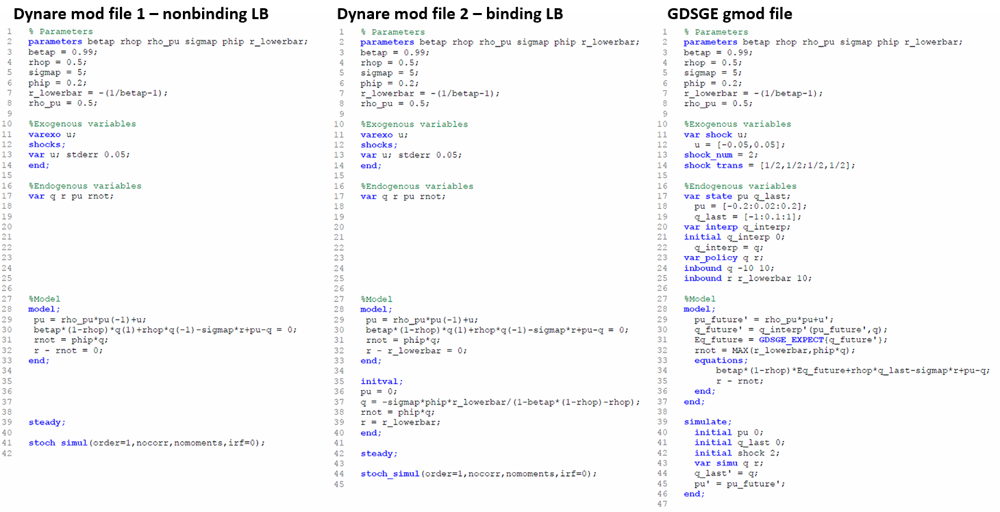

Comparison with OccBin: A Simple Model with an Occasionally Binding Interest Rate ZLB
In Guerrieri and Iacoviello (2015) the authors developed a toolbox, OccBin, which solves models with occasionally binding constraints by a piecewise linear algorithm based on Dynare. To highlight the connections with OccBin, and introduce GDSGE to researchers who are already familiar with Dynare and OccBin, we solve the model in Subsection 2.4 of Guerrieri and Iacoviello (2015), a simple model with an occasionally binding lower bound on the interest rate.
The Model
Asset price q is determined by the intertemporal asset pricing equation:
where \(\mathbb{E}_{t}\) is the conditional expectation operator, and \(\beta, \rho, \sigma\) are parameters. The current value of \(q_{t}\) depends on its previous value, its expected future value, the net interest rate \(r_{t}\), and an exogenous shock \(u_{t}\), which follows the following AR(1) process:
\(r_{t}\) follows a simple feedback rule with an occasionally binding lower bound:
where parameter \(\phi>0\). The max operator prevents \(r_{t}\) from falling below a certain threshold \(\underline{r}\).
Denote value of q in the previous period as \(q_{-1}\), and its future value as \(q^{\prime}\). A recursive competitive equilibrium consists of functions \(q\left(q_{-1},u\right), r\left(q_{-1},u\right)\) s.t.
This recursive system can be solved using a time iteration procedure similar to the one for the standard RBC model. In the period-t time step, we take the function \(q_{t+1}\left(q,u^{\prime}\right)\) as given, and solve for \(q_{t}\) and \(r_{t}\) by the following system of equations at each collocation of \(\left\{ q_{-1},u\right\}\):
GDSGE v.s OccBin
The recursive system can now be input to the GDSGE toolbox via a gmod file simple_zlb.gmod, listed below.
1% Parameters
2parameters betap rhop rho_pu sigmap phip r_lowerbar;
3betap = 0.99;
4rhop = 0.5;
5sigmap = 5;
6phip = 0.2;
7r_lowerbar = -(1/betap-1);
8rho_pu = 0.5;
9
10%Exogenous variables
11var_shock u;
12 u = [-0.05,0.05];
13shock_num = 2;
14shock_trans = [1/2,1/2;1/2,1/2];
15
16%Endogenous variables
17var_state pu q_last;
18 pu = [-0.2:0.02:0.2];
19 q_last = [-1:0.1:1];
20var_interp q_interp;
21initial q_interp 0;
22 q_interp = q;
23var_policy q r;
24inbound q -10 10;
25inbound r r_lowerbar 10;
26
27%Model
28model;
29 pu_future' = rho_pu*pu+u';
30 q_future' = q_interp'(pu_future',q);
31 Eq_future = GDSGE_EXPECT{q_future'};
32 rnot = MAX(r_lowerbar,phip*q);
33 equations;
34 betap*(1-rhop)*Eq_future+rhop*q_last-sigmap*r+pu-q;
35 r - rnot;
36 end;
37end;
38
39simulate;
40 initial pu 0;
41 initial q_last 0;
42 initial shock 2;
43 var_simu q r;
44 q_last' = q;
45 pu' = pu_future';
46end;
{kind=link}
The figure above displays the solutions of GDSGE and compare them with piecewise-linear solutions by OccBin, and linear solutions by Dynare. In general, the piecewise-linear solution is close to the nonlinear solution, but there are some differences, especially when the shock size is below the cutoff value (around \(u_{t}=-0.08\)) at which the lower bound on \(r_{t}\) starts to bind. In this region OccBin yields higher asset prices than GDSGE does. The reason is that OccBin assumes no future shock innovations when it solves for the current asset price \(q_{t}\). Because the asset pricing function is concave, this assumption implies a higher expected value of future asset price \(q_{t+1}\) (by Jensen’s inequality) than the true expected value. Consequently, from the intertemporal asset pricing equation (2), \(q_{t}\) is higher in OccBin solution than in the GDSGE solution.
{kind=link}
In the above figure, we provide a line by line comparison of the mod files that are used to solve this model by OccBin and GDSGE. Since OccBin is designed as an add-on to Dynare, most of the differences in the structure here have been illustrated in the translation from Dynare example. Here we choose to highlight two key implementation differences between OccBin and GDSGE. First, users of OccBin need to write two Dynare mod files corresponding to the two separate regimes - one with nonbinding lower bound on the interest rate in equation (3) and the other one with binding constraint - as in the left-most and middle files in the figure. Notice that Line 32 in both files sets the equilibrium interest rate to different values depending on whether the lower bound binds. Then OccBin solves the model dynamics after an exogenous shock by conjecturing the future periods in which each regime applies and updating this conjecture over iterations using its companion Matlab codes. In contrast, GDSGE requires a single gmod file (the right-most file in the figure) to accommodate both regimes together in a self-contained script, and which regime applies is an endogenous equilibrium outcome as described in Line 32 of the file. Second, OccBin requires a fixed exogenous shock as input. Thus to plot the policy functions in the figure, OccBin needs to be called repeatedly for each value in the grid of \(u_{t}\) on the abscissae (21 times in this example and more if one uses finer grid). On the contrary, GDSGE can handle different values of state variables at once, as in Lines 18-19 in the GDSGE file.
With that being said, Occbin has its own merits relative to GDSGE. First, the piecewise linear perturbation method it uses can solve, and estimate models with a large number of state variables very quickly. Second, Occbin is designed to generate impulse response functions directly, while users of GDSGE need to generate the impulse response functions by simulation after the policy functions are solved. See an example here.